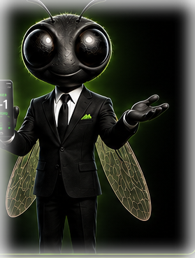

When a game gets tight in the final minutes, it hits FlyTime: the part actually worth watching. ScoreFly tells you the moment it happens, across every sport you follow.
Pick your teams
Follow the teams you care about. We'll watch them for FlyTime moments and big results.
🔍
Popular picks
You might also follow

Never miss a finish
Get a heads-up when your teams are playing, and when a close game hits FlyTime. You can fine-tune this anytime.
Live Now
My Teams
All
Worth watching now
Coming Up
Results
My Teams
All
No results for your teams yet
🔍
My Teams
No teams selected yet
🔔Tap the bell to manage alerts for a team
FlyTime ALL
🔥
Never miss a close finish
Get notified whenever a game anywhere enters FlyTime.
FlyTime accuracy
Suggested for you
Score colours
Neutralsteady or even
Warming upbuilding momentum
On a runscoring streak
On firedominant run
Gone coldopponent has taken over
Comebackclawing back a deficit
Fly Timeclose and in the final stretch
A red match clock means the game has gone to overtime.